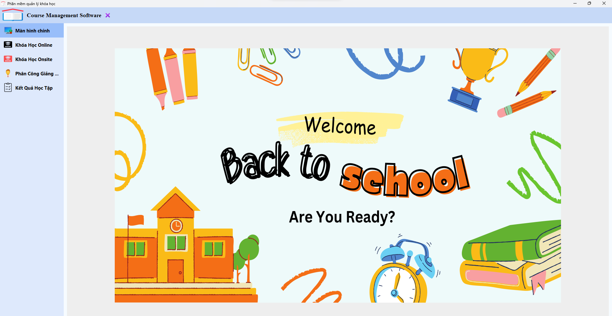

Portfolio
My Skills
Programming Languages:- Proficient in PHP and C-Sharp.
- Experience with PHP for backend development.
- Familiarity with HTML, CSS, JavaScript and front-end technologies.
- Basic Python, Java and PHP frameword
- Proficient in using Git for version control and collaborative projects.
- Analytical thinker with a strong ability to solve complex problems.
- Experience in algorithm design and optimization.
My Project
- Online phone store Languages: Html, Css, Javascript and Php Decription: A phone selling website is built using HTML, CSS, and JS for designing the interface, while PHP handles the data processing on the backend. The website is created to meet the needs of people who want to purchase phones from anywhere without having to visit a physical store
- Room Management Languages: Java Decription: The room management app, developed in the Java programming language, aims to manage tenants along with associated services in rented accommodations.
- Student Management Languages: Java Decription: Java-based student management system designed to oversee courses, instructors, and locations for learning. Students have the flexibility to choose between online and offline learning options
